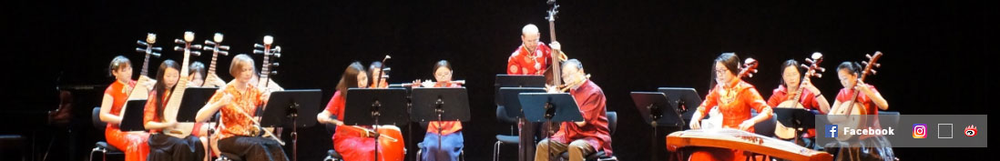

Die Links leiten zur Videoplattform Youtube:
10. Tag der Laienmusik im Kulturzentrum am Gasteig, München 2016:
> Bu Bu Gao
> Tiefdunkle Nacht
> Auf den Gipfeln des Ostgebirges
> Hochlandtanz
> Reise in die Stadt Suzhou
> Probe für den Neujahrsauftritt 2017
Auftritt beim > Frühlingsfest des CSSA Munich (Munich Chinese Students and Scholars Association) 2015
|